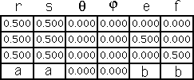
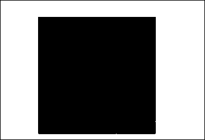

IFS Animations
Here the scaling factor of the upper right piece ranges between
a = 0.5
and
a = 0.25
, the translation between
b = 0.75
and
b = 0.5
.
Throughout the animation, the unchanging part is the right isosceles Sierpinski gasket. Do you see why?

